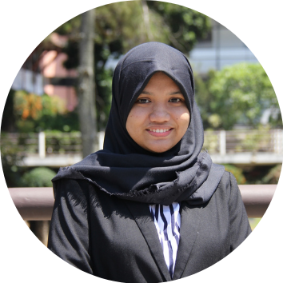

|  | Faradissa Eka Putrifaradissa.ep@gmail.com | +62-8211-289-3345 | LinkedIn |
Dissa is an Industrial Engineering bachelor with high enthusiasm in ergonomics and human-centered perspectives. As she has huge interest in Tech Product Management and Development, she always makes sure that her designs are user-centered. Dissa has up to 1 year transferrable experiences & skills in Product Management and System Analysis, 1+ years in User Research and Project Management, and currently expanding her arsenal by learning Fullstack Development with Javascript, HTML, CSS, Node.js, and React.js. You may find her PM and UX Portfolio and her Github on each respective links.
Bandung Institute of Technology - Industrial Engineering Bachelor (2018-2022)
Udemy - The Complete 2023 Web Development Bootcamp
Rakamin Academy - Virtual Internship: UX Researcher at Telkom Amoeba Indonesia
| Date | Position |
|---|---|
| Oct 2022 - Present | IT Project Management Officer at RPX One Stop Logistics
Manage Express and Shared Service division IT Project and Enhancement |
| Feb 2022 - Nov 2022 | Product Researcher and Designer at Bandung Institute of Technology
Collaborated in 5-member multidisciplinary team to design physical product and user interface of elderly-friendly self service kiosk for learning purposes. Conducted user research, analyzed user requirements, created protoype, and conducted usability testing. |
| Dec 2021 - Jun 2022 | People Operations Intern at Kargo Technologies
Represent Kargo GA team to communicate effectively to various stakeholders to ensure seamless business trip process, priotitized and assisted various administration works such as report making, managing databases, reporting reimbursement and cash advances, and expatriate necessities. |
Skills |
Software |
Softskills |
|||
|---|---|---|---|---|---|
| UX Research | ⭐⭐⭐⭐ | Microsoft Office | ⭐⭐⭐⭐⭐ | Communication | ⭐⭐⭐⭐⭐ |
| Project Management | ⭐⭐⭐⭐ | Google Workspace | ⭐⭐⭐⭐⭐ | Teamwork | ⭐⭐⭐⭐⭐ |
| Product Management | ⭐⭐⭐ | FIGMA | ⭐⭐⭐ | Negotiation | ⭐⭐⭐⭐ |
| UI Design | ⭐⭐ | CANVA | ⭐⭐⭐ | Leadership | ⭐⭐⭐⭐ |
| Web Development | ⭐ | VS Code | ⭐ ⭐ |